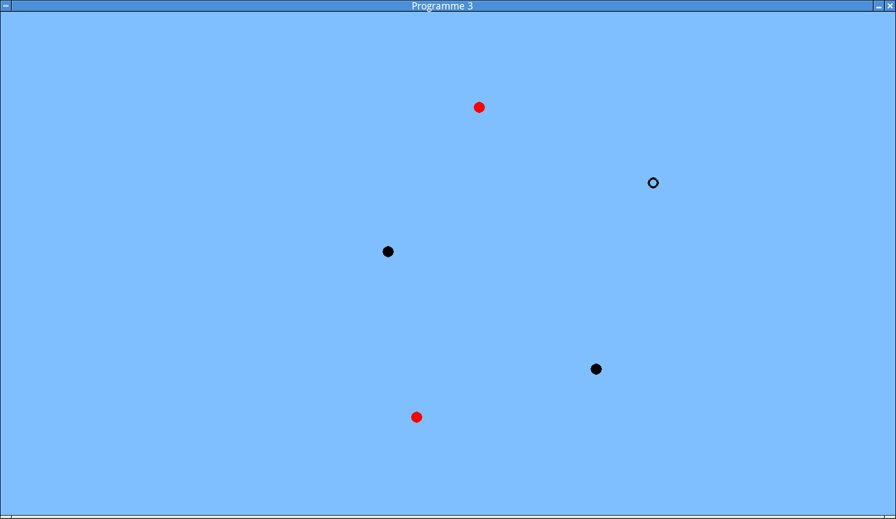
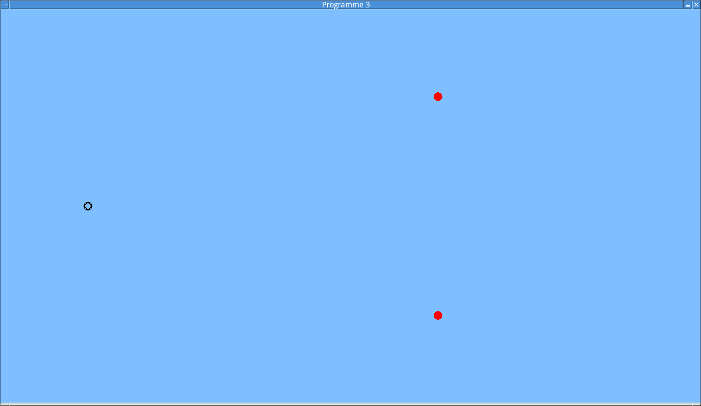
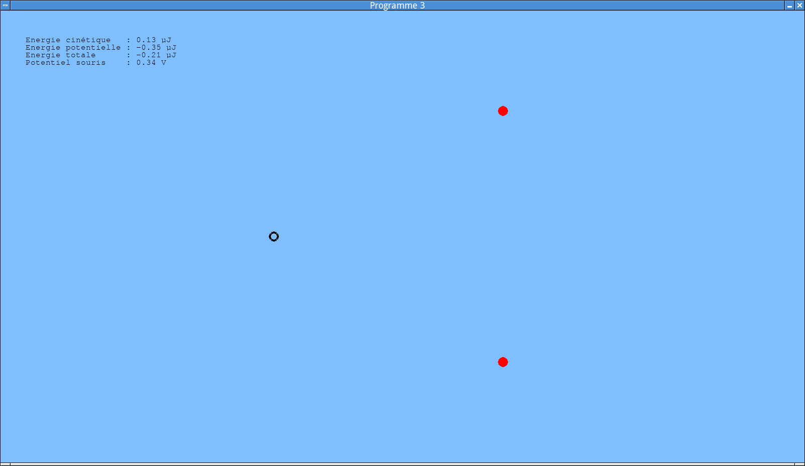

Laboratoire 2¶
Les notions abordées dans ce laboratoire sont les suivantes:
- Mathématique:
- Les intégrales curvilignes.
- Physique:
- La force de Coulomb.
- La deuxième loi de Newton.
- L’énergie cinétique et l’énergie potentielle.
- Le potentiel électrique.
Programme 3: Mouvement d’une charge dans un champ électrostatique¶
Le programme que vous allez réaliser se base sur celui que vous avez obtenu à la fin du laboratoire 1. Son but est de simuler le mouvement d’une charge électrique plongée dans un champ électrostatique (c’est-à-dire le champ électrique créé par un ensemble de charges immobiles).
Programme de base¶
La première étape consiste à apporter quelques modifications au programme 2:
Recopier ce programme dans un nouveau fichier
prog-3.py.Enlever de ce programme l’ensemble des mécanismes liés à l’affichage du champ électrique, qui ne seront pas exploités dans ce projet.
Attention: Ne pas effacer la fonction
calculer_champ(), qui sera quant à elle réutilisée.Concrètement, les fonctions à retirer sont:
dessiner_vecteur()etdeplacer_pol().dessiner_champ()etcalculer_couleur().
Vérifier que le programme fonctionne toujours correctement (en particulier, qu’il permet toujours d’ajouter et de retirer des objets chargés).
Ajouter un mécanisme permettant de gérer un mobile:
- Avant d’entrer dans la boucle principale, initialiser à
Falseune variable booléennemobile_est_presentdestinée à indiquer si le mobile existe ou non. - De même, initialiser (à 0) des variables
mobile_x,mobile_y,mobile_vx,mobile_vycontenant respectivement les composantes x et y de la position et de la vitesse du mobile. - Initialiser également (à n’importe quelle valeur) une variable
mobile_chargereprésentant la charge électrique du mobile.
- Avant d’entrer dans la boucle principale, initialiser à
Créer une fonction
dessiner_mobile()chargée d’afficher le mobile à sa position courante, si ce mobile existe.Pour distinguer le mobile des objets chargés, une possibilité est de dessiner celui-ci sous la forme d’un cercle (et non d’un disque) de couleur rouge si le mobile est chargé positivement, et noire s’il est chargé négativement.
Notes:
- En Pygame, l’instruction
pygame.draw.circle(fenetre, couleur, (x, y), r, w), avec un cinquième paramètrew, dessine un cercle de centre(x, y), de rayonret de largeur de traitw. Dans le cas présent, une largeur de trait de 4 pixels donne un bon résultat. - Ne pas oublier d’appeler
dessiner_mobile()dans la boucle principale du programme. Pour tester que cette fonction se comporte correctement, on peut temporairement initialiser les variables déterminant la position et l’existence du mobile avec des valeurs de test.
- En Pygame, l’instruction
Dans la boucle principale, détecter les évènements de type
pygame.KEYDOWNdont le champkeyvautpygame.K_p(touche “P”) oupygame.K_n(touche “N”). L’appui d’une de ces touches doitcréer le mobile s’il n’existe pas encore,
lui affecter une charge positive (“P”) ou négative (“N”) de \(10^{-7}\) C, et
le positionner à l’endroit où se trouve le pointeur de la souris, qui peut être récupéré grâce à l’instruction:
x_souris, y_souris = pygame.mouse.get_pos()
lui attribuer une vitesse initiale nulle.
Tester votre programme. Celui-ci doit permettre d’ajouter et de retirer librement des objets chargés positivement et négativement, et de repositionner le mobile à volonté. Voici un exemple d’affichage attendu, dans le cas d’un mobile chargé négativement:
Affichage du mobile.
{kind=link}
Mouvement du mobile¶
Lorsqu’une charge électrique \(q'\) est placée dans un champ électrique, elle subit une force \(\vec{f}\) appelée force de Coulomb, égale à
\(\vec{f} = q' \vec{E}_{p'}\),
où
- \(p'\) est l’endroit où se trouve cette charge,
- \(\vec{E}_{p'}\) est la valeur du champ électrique à cet endroit.
(En d’autres termes, on peut voir le champ électrique comme représentant en tout point de l’espace la force qui serait subie par une charge unitaire si elle était placée à cet endroit.)
Pour simuler le mouvement du mobile engendré par cette force, il suffit d’appliquer la deuxième loi de Newton afin de mettre à jour répétitivement la vitesse et la position de celui-ci. La procédure est similaire à celle mise en oeuvre dans les laboratoires 4 , 5 et 6 de la première partie du cours:
Dans la boucle principale du programme, appeler une nouvelle fonction
mettre_a_jour_mobile(t)pour chaque milliseconde de temps écoulé. Le paramètretde cette fonction donne l’instant (en secondes) de l’étape de simulation courante.Plus précisément, cette opération consiste, à chaque itération de la boucle principale du programme, à
- appeler
pygame.time.get_ticks()afin d’obtenir l’instant couranttemps_maintenant, exprimé en millisecondes. - pour chaque valeur de
tdepuis l’ancienne valeur detemps_maintenant(c’est-à-dire, celle de l’itération précédente de la boucle principale) àtemps_maintenant - 1, appelermettre_a_jour_mobile(t_secondes), oùt_secondesest la conversion deten secondes.
- appeler
Implémenter la fonction
mettre_a_jour_mobile()afin d’y calculer, si le mobile existe, la force qu’il subit, ce qui permet d’en calculer l’accélération. Ensuite, mettre à jour la vitesse et la position du mobile.Notes:
- Le calcul de la force de Coulomb doit bien entendu exploiter le
calcul du champ électrique déjà implémenté dans la fonction
calculer_champ(). - La masse du mobile, nécessaire au calcul de la deuxième loi de Newton, peut être fixée à \(10^{-10}\) kg.
- Cette opération peut utiliser les mêmes conventions d’unités que le programme 2, c’est-à-dire considérer qu’une distance d’un pixel dans la fenêtre correspond à un déplacement de 1 m dans la simulation.
- Le calcul de la force de Coulomb doit bien entendu exploiter le
calcul du champ électrique déjà implémenté dans la fonction
Une difficulté que vous avez peut-être détectée dans l’étape précédente est que le champ électrique n’est pas défini partout: si vous l’avez correctement implémentée, la fonction
calculer_champ()retourneNoneaux positions très proches d’une charge électrique.Une façon simple de résoudre ce problème consiste à faire disparaître le mobile (en attribuant la valeur
Falseàmobile_est_present) lorsqu’il entre en collision avec une charge. Ce sera alors à l’utilisateur de repositionner le mobile en appuyant sur “P” ou “N”.Vérifier soigneusement que votre programme fonctionne, en le testant avec des mobiles chargés positivement et négativement.
Ne vous inquiètez pas si le mobile bouge lentement. Dans la configuration ci-dessous, il faut normalement une trentaine de secondes pour qu’il atteigne le bord droit de la fenêtre. (Des vitesses plus rapides peuvent bien sûr être obtenues en créant un plus grand nombre d’objets. Ne pas hésiter à expérimenter!)
Configuration de test.
{kind=link}
Energie cinétique et énergie potentielle¶
Cette étape consiste à ajouter au programme un tableau de bord affichant à chaque instant l’énergie cinétique et l’énergie potentielle du mobile. Celles-ci sont définies de la façon suivante:
Si le mobile se déplace avec une vitesse égale à \(\vec{v}\) et possède la masse \(m\), alors son énergie cinétique est égale à \(\displaystyle\frac{1}{2}m|\vec{v}|^2\).
L’énergie potentielle électrostatique du mobile correspond au travail que celui-ci doit effectuer contre la force de Coulomb pour se déplacer d’une position située à l’infini (où, par convention, cette énergie potentielle est nulle) vers sa position courante.
Mathématiquement, ce travail s’exprime sous la forme suivante:
\[W = -\int_{\Gamma} \vec{f}.d\vec{u},\]où \(\Gamma\) est un chemin d’un point situé à l’infini vers la position courante du mobile, et \(\vec{f}\) est la force de Coulomb sur les points de ce chemin. Le signe moins exprime le fait que le travail s’exerce contre la force.
Dans le cas de l’énergie potentielle, on peut montrer que cette intégrale possède la même valeur quel que soit le chemin \(\Gamma\) qui est emprunté.
Si le champ électrique est engendré par une seule charge \(q\) située au point \(p\), l’énergie potentielle par rapport à ce champ d’une charge \(q'\) située en \(p'\) peut donc se calculer en considérant un chemin \(\Gamma\) qui suit une ligne droite allant de l’infini à \(p'\). On obtient alors
\[\begin{split}W &= - \int_{+\infty}^r \frac{kqq'}{x^2}dx\\ &= \int_r^{+\infty} \frac{kqq'}{x^2}dx\\ &= \frac{kqq'}{r},\end{split}\]où \(k\) est la constante de Coulomb, et \(r\) est la distance séparant \(p\) de \(p'\).
Pour un champ engendré par plusieurs charges \(q_i\) situées respectivement à la distance \(r_i\) de \(p'\), l’énergie potentielle du mobile situé en \(p'\) correspond à la somme des contributions de chaque charge:
\[\displaystyle W = \sum_i \frac{kq_iq'}{r_i}.\]
Vous êtes maintenant prêts à implémenter le tableau de bord. Voici la marche à suivre:
Créer une fonction
calculer_energie_potentielle(x, y, charge)calculant l’énergie potentielle d’une charge située à un endroit(x, y)donné, en fonction du champ créé par l’ensemble des objets fixes.Dans la boucle principale du programme, en exploitant la fonction précédente, calculer l’énergie cinétique et l’énergie potentielle du mobile (s’il existe), et les mémoriser dans deux variables
energie_cinetiqueetenergie_potentielle.En utilisant les mêmes mécanismes que ceux du programe 8 de la première partie du cours, implémenter un tableau de bord affichant en permanence l’énergie cinétique et l’énergie potentielle du mobile, ainsi que leur somme.
Note: Si vos calculs sont corrects et utilisent les constantes et les unités qui ont été recommandées par ce tutoriel, les énergies en jeu devraient être faibles. Pour qu’elles ne soient pas arrondies à zéro, on peut en multiplier la valeur par \(10^6\) avant de les afficher (ce qui revient à les exprimer en microjoules plutôt qu’en joules).
Tester votre programme. Le résultat suivant correspond à la situation initiale de l’exemple précédent, après une quinzaine de secondes de simulation.

Tableau de bord.
Réaliser des expériences! L’objectif est de bien comprendre ce que représentent l’énergie cinétique et l’énergie potentielle. Pourquoi leur somme reste-t-elle constante si l’ensemble des charges n’est pas modifié? (Si elle ne l’est pas pour votre programme, c’est le symptôme d’une erreur!) Aussi, pouvez-vous donner une interprétation au signe de cette somme?
Le potentiel électrique¶
La dernière partie de de laboratoire est consacrée à la notion de potentiel électrique. Le potentiel \(V\) en un point \(p'\) est défini comme étant égal à l’énergie potentielle d’une charge de 1 C placée en \(p'\) (ou, de façon équivalente, à l’énergie potentielle d’une charge \(q'\) divisée par \(q'\)). On a donc pour le champ engendré par un ensemble de charges \(q_i\):
\[\displaystyle V = \sum_i \frac{kq_i}{r_i}.\]
Procédure:
Créer une fonction
calculer_potentiel(x, y)capable de calculer le potentiel électrique au point(x, y). (Il faut naturellement essayer d’exploiter le plus possible les fonctions déjà implémentées dans votre programme.)Note: Attention, le mobile génère également un champ électrique! Il ne faut pas oublier d’en tenir compte lorsqu’on calcule le potentiel. Cela signifie que si le mobile existe, il faut ajouter un terme qui lui est associé à l’expression de \(V\).
A chaque itération de la boucle principale du programme, mettre à jour une variable
potentiel_sourischargée de retenir la valeur du potentiel électrique à la position courante de la souris.Rappel:: Cette position peut être obtenue en évaluant
pygame.mouse.get_pos().Mettre à jour le tableau de bord de façon à afficher la valeur courante de
potentiel_souris. Attention à bien gérer la situation où le potentiel est indéfini (ce qui se produit notamment lorsque le pointeur de la souris est placé au même endroit qu’une charge).Tester votre programme. Dans cet exemple, le pointeur de la souris est placé approximativement au coin supérieur gauche de la fenêtre. Les conditions de la simulation sont similaires à celles de l’exemple précédent.
Affichage du potentiel.
Deposer la version finale de votre programme dans le répertoire centralisé des laboratoires, avec le suffixe
prog-3.py.
{kind=link}